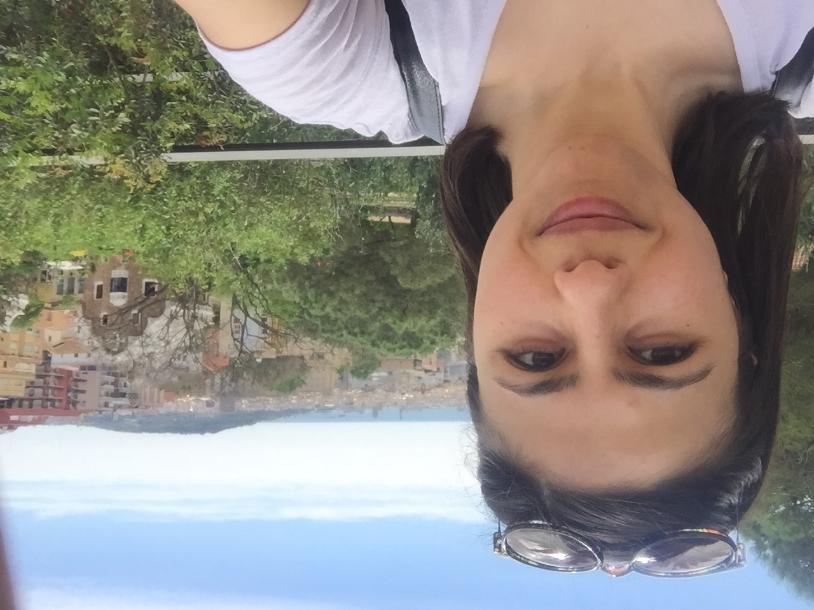

Madeline Vu

Summary
I am a physiology lecturer with a passion for teaching and lifelong learning.
My work focuses on helping students understand complex biological systems in a clear and engaging way.
Recently, I have begun learning web development to build digital spaces where knowledge,
creativity, and communication can meet.
Education
- Newcastle University - BSc Physiological Sciences 2006-2010
- Bristol University - MSc Molecular Neuroscience 2011-2012
- Nottingham University - PhD Life Sciences 2016-2023
Work Experience
-
Senior Instructor – Eastern Mediterranean University, Faculty of Pharmacy (2014–2016)
- Delivered laboratory practical sessions for pharmacy students.
- Trained students in laboratory techniques and scientific procedures.
- Collaborated with technicians and academic staff to prepare practical classes.
-
Biology Teacher (GCSE & A-Level) – Eastern Mediterranean Doğa College (2013–2014)
- Prepared and delivered biology and general science lessons.
- Developed lecture materials and teaching resources.
- Supported students in achieving strong academic results.
-
Laboratory Assistant – Medical Centre Hospital (2007)
- Performed basic biochemical laboratory techniques.
- Recorded laboratory analysis data using Microsoft Office.
- Communicated with patients and maintained accurate records.
-
Pharmacy Assistant – Zeynep Pharmacy (2006)
- Assisted with daily pharmacy operations and stock management.
- Maintained sales and inventory records.
- Helped patients with inquiries under pharmacist supervision.
Skills
- Interpersonal communication skills (active listening, asking probing questions, negotiating to
reach agreement and speaking clearly)
- Team-working (to establish a good rapport with others, recognize and respect attitudes and
belief, contribute to planning)
- Adaptability and fast-learning (to respond readily to changing situations, recognize potential
for improvement, initiate change and make it happen: manage stress and re-apply known
solutions to new situations)
- Result-oriented (organized, sets realistic goals and manages time efficiently)
- Effective communication
Hobbies
Contact Me